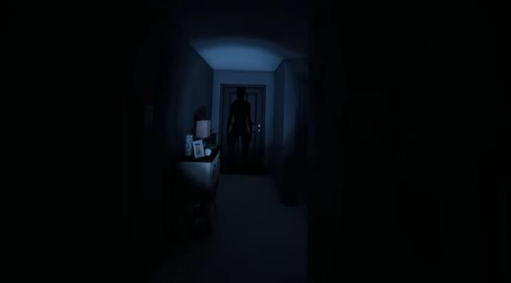

bas de page ↓

- Identification de l'entitée
Orb Fantomatique:
- preuve: Les orbes fantômes sont un type de preuve émise par la salle de l'entitée et ressemblent à de très petites orbes flottantes jaunes ou blanche.Ils peuvent être vus sur l'écran de l'ordinateur à l'aide d'une caméra vidéo ou d'une caméra à tête avec vision nocturne.
- à savoir: On peut voire difficilement ou ne pas les voires si la lumiére est allumer. Les Orbs ne sont visible que par les caméra en vision nocturne.
camera
Spirit Box:
- preuve: La Spirit Box est un équipement qui peut être utilisé pour poser des questions aux fantômes afin d'obtenir plus d'informations. Seuls quelques fantômes répondront via la Spirit Box, qui peut être utilisée comme preuve lors de l'identification du fantôme.
- à savoir: Certaines entitées ne réponde que au personne seul donc regarder bien le tableau des objectifs avant de partir. Certaines entitées ne répondent pas quand il y a de la lumière.
Spirit Box
Emprinte:
- preuve: Les empreintes digitales sont un type de preuves laissées par certaines entitées lorsqu'ils interagissent avec l'environnement du lieu.
- à savoir: On peut trouver les empreintes sur les fenettres, portes, interrupteur. Vous pouvez voir les empreintes digitales en utilisant la lumière UV ou le bâton lumineux. Attention, Les empreintes de pas marquées à l'aide de sel ou les empreintes de pied avec l'UV ne sont pas considérées comme des preuves d'empreintes digitales elle serve juste à indiquer ou est l'entitée.
Lampe UV/Bâton UV:
EMF niveaux 5:
- preuve: Le niveau EMF 5 est un élément de preuve utilisé pour déterminer quel type de fantôme hante l'emplacement.
- à savoir: Le niveau EMF 5 est considéré valider que quand les 5 diodes sont allumé si c'est endessou ce n'est pas ou pas encore un EMF niveau 5.
Lecteur EMF:
Température glaciale:
- preuve: Les températures glaciales sont un élément de preuve utilisé pour déterminer quel type de fantôme hante votre emplacement.
- à savoir: La température peut être lue à l'aide d'un thermomètre / ou en observant votre respiration qui fera de la buée. Attention, On peut considéré d'être en têmpérature glaciale que si on est inférieure à 0 degré Celsius ou inférieure à 32 Fahrenheit.
Thermomètre:
Ecriture Fantomatique:
- preuve: L'écriture Fantomatique est une preuve utilisée pour déterminer quel entitées hante l'emplacement.
- à savoir: Eteindre la lumière augmente les chances d'écriture Fantomatique et mettre un deuxiéme livre aussi.
Livre d'écriture:
Retour en haut ↑